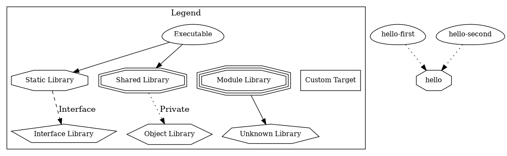

Structure - Subdirectories, Dependencies, and Include Paths¶
Reorganization¶
Descend into
libhello/andbin/Move files around
Move CMake code around
Miss to care about include paths
ToplevelCMakeLists.txt¶ADD_SUBDIRECTORY(libhello) ADD_SUBDIRECTORY(bin)
$ make
[ 14%] Building C object libhello/CMakeFiles/hello.dir/hello.c.o
[ 28%] Building C object libhello/CMakeFiles/hello.dir/hello-name.c.o
[ 42%] Linking C shared library libhello.so
[ 42%] Built target hello
[ 57%] Building C object bin/CMakeFiles/hello-first.dir/hello-first.c.o
/home/jfasch/work/jfasch-home/trainings/material/soup/cmake/code/bin/hello-first.c:1:10: fatal error: hello.h: No such file or directory
1 | #include "hello.h"
| ^~~~~~~~~
compilation terminated.
make[2]: *** [bin/CMakeFiles/hello-first.dir/build.make:76: bin/CMakeFiles/hello-first.dir/hello-first.c.o] Error 1
make[1]: *** [CMakeFiles/Makefile2:144: bin/CMakeFiles/hello-first.dir/all] Error 2
make: *** [Makefile:136: all] Error 2
Dependencies, And Target Properties¶
Dependencies are in place
Only code has been moved around
⟶
helloheader files are now too far away frombin/targetsLet
hellocarry that informationTARGET_INCLUDE_DIRECTORIES(hello PUBLIC .)⟶ propagated to dependers
PUBLICvs.PRIVATEPUBLICpropagated to dependers (see/show.dependersdot file) so they can find the headers of targets they depend onPRIVATEdoes not propagate. Purpose: e.g., one might structure (internally only) a target’s source code intosrc/andinc/for example.
{kind=link}